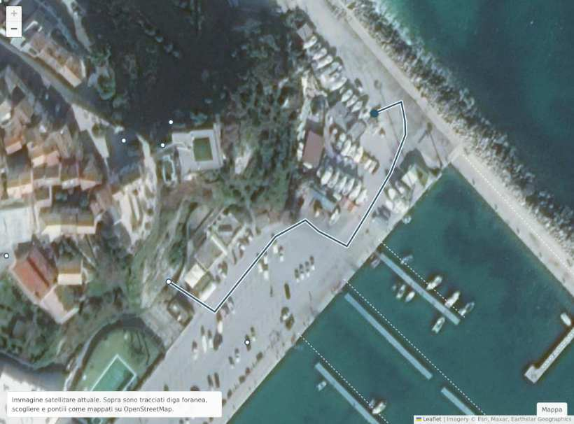

Porto di Numana
Riviera del Conero
Satellite
Modello 3D
Scheda
Cerca un'attività o un servizio
Tutte le categorie
19 attività
{{v.nome}}
{{v.settore}}

Immagine satellitare attuale. Sopra sono tracciati diga foranea, scogliere e pontili come mappati su OpenStreetMap.
Mappa